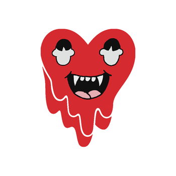

Jackson Zhang
Learning is a lifelong process that will always allow you to gain a new perspective of the world and what other people think. Throughout this process, you will gain a broader worldview and it will allow you to become an understanding person that values other people’s opinions. Grandma’s story truly inspires me, it shows the importance of learning and how learning can lead you to become a better person at any point in your life. As you are learning those lessons in life through experiencing different events and activities, remember to also question the meaning of what you are learning. Often asking questions to yourself will allow you to identify the importance of certain activities. After you learn to identify the importance of those activities, you will be able to come up with changes and choose the specific type of activity that fits you. Choosing the correct path will prevent you from wasting your time and it will even further effectively benefit you.
You’ve always heard of the phrase “pleasure comes through toil.” You know that nothing can be achieved easily without putting in lots of effort. Maybe you still haven’t realized the importance of this phrase, but I hope that once you figured out what you want to do in life, then you will dedicate yourself to whatever it is. Dig into what you find fun and enjoyable and also pursue a career that you love to do for the rest of your life. You wouldn’t want to work in a 9-5 job day-to-day for the rest of your life, and there are not many opportunities that are different from that. To succeed in a particular field, you will need to learn from the successful people how to manage yourself and put in the work just like them. Even put in the extra effort than those who are even more successful than you, and eventually, you will stand out and shine among them. I truly believe that you have high potential and you won’t be able to discover them if you do not try.
Remember that the hardest step is to begin putting in the work, and once you begin, I believe that you will have the dedication to achieve success in the field that you decide to go into. Don’t be afraid to try new things, you might enjoy doing those things and end up falling in love with them. Along with trying out new things, you should also remember that nothing is ever too late. Remember the story that you heard of how an old grandma started to learn how to play the piano even when she is 80 years old, and she recalls it as the best decision she’s ever made in her life.
Experience
Clubs and Organizations
• Participated in volunterring events such as breast cancer run
• Participated in many events in highschool Chinese-Drama Club
• Experience with professional email writing
Sprots
• Active baskerball memeber of ourself created baskerball team-CN-Hoopers
• Starting 5
Learning NFTs
• Participated in discord events in different NFT programs
• Learning about the new web 3
• Participated in offline exclusive events for NFT projects
• Learning about different projects and the management system
Education
UC Riverside
University of California Riverside
University of California Riverside
Portfolio
